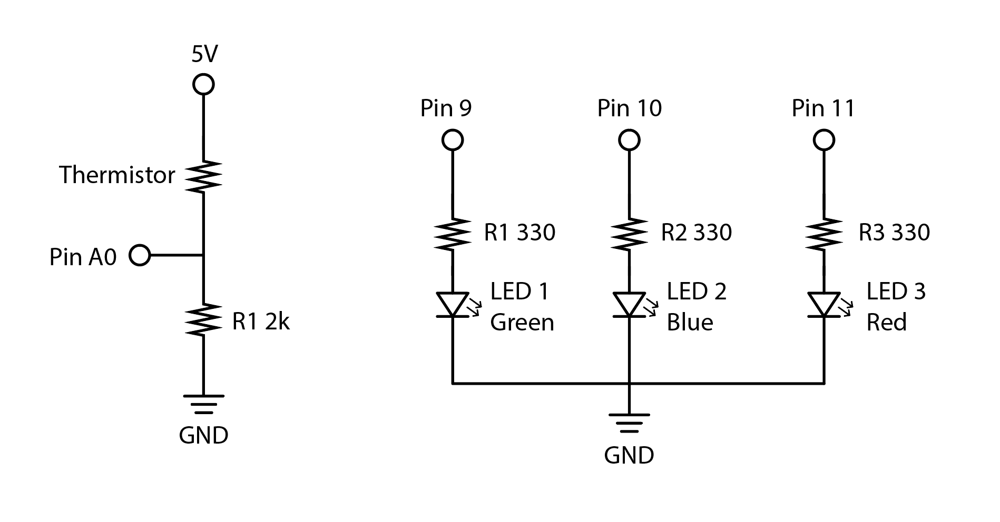
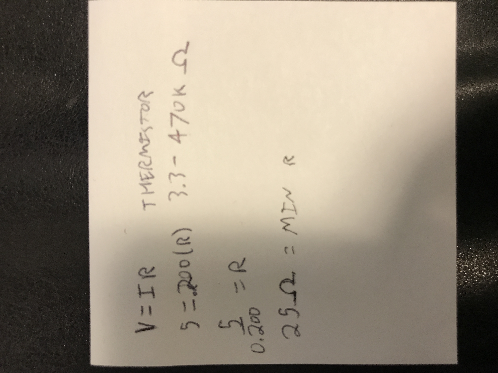

Pari Gabriel's Assignment 3!
Here is all the documentation for assignment 3.
 Circuit
Circuit
 Schematic
 The minimum acceptable resistance calculated for the thermistor to not short out.
 The circuit in action.
The circuit in action.
const int analogInPin = A0; // Analog input pin that the potentiometer is attached to
int sensorValue = 0; // value read from the heat sensor
int outputValue = 100; // value output to the PWM (analog out)
int analogOutPin = 10; // Analog output pin that the blue LED is attached to
void setup() {
// initialize serial communications at 9600 bps:
Serial.begin(9600);
}
void loop() {
// read the analog in value:
sensorValue = analogRead(analogInPin);
// change the analog out value:
analogWrite(analogOutPin, outputValue);
// if the sensor is heated, change the out pin to power the red LED (pin 11)
if (sensorValue < 430) {
analogOutPin = 11;
}
// set brightness of LED
outputValue = 255;
// print the results to the Serial Monitor:
Serial.print("sensor = ");
Serial.print(sensorValue);
Serial.print("\t output = ");
Serial.println(outputValue);
// wait 2 milliseconds before the next loop for the analog-to-digital
// converter to settle after the last reading:
delay(2);
}
The code snippet.